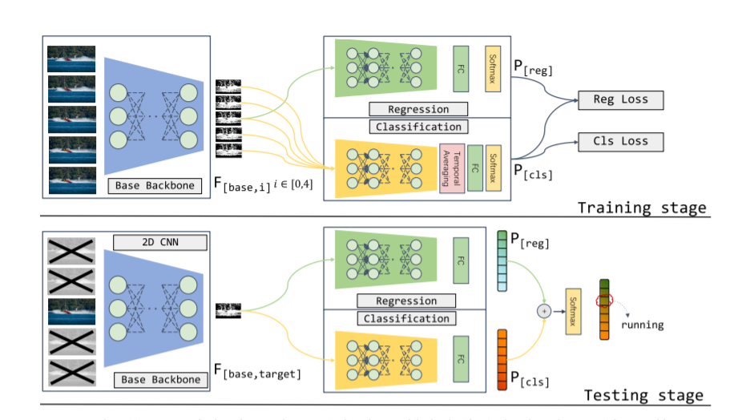
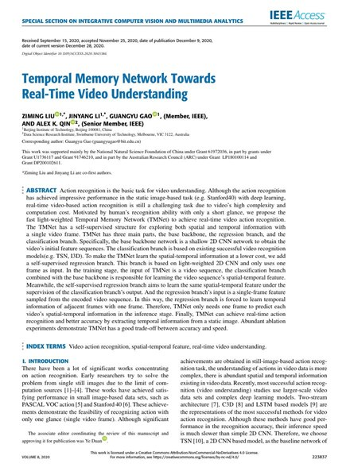

Temporal Memory Network Towards Real-Time Video Understanding

Abstract
Action recognition is the basic task for video understanding. Although action recognition has achieved impressive performance in static image-based tasks (e.g. Stanford40) with deep learning, real-time video-based action recognition is still challenging due to video's high complexity and computation cost. Motivated by a human's recognition ability with only a short glance, we propose the fast light-weighted Temporal Memory Network (TMNet) to achieve real-time video action recognition.
TMNet has a self-supervised structure for exploring both spatial and temporal information with a single video frame, and consists of three main parts: the base backbone, the regression branch and the classification branch. The base backbone is a shallow 2D CNN producing the video's initial feature sequences, and the classification branch builds on existing video recognition models such as TSN and I3D. To learn spatio-temporal information at lower cost we add a self-supervised regression branch based on a light-weight 2D CNN that takes a single frame as input.
During training the classification branch and the backbone learn the sequence's spatio-temporal feature, while the regression branch learns the same feature under the supervision of the classification branch's output — forcing it to recover the temporal information of adjacent frames from one frame. At inference TMNet therefore needs only one frame per video, achieving real-time action recognition with a good accuracy/speed trade-off.
Paper

Ziming Liu, Jinyang Li, Guangyu Gao, Alex K. Qin.
Temporal Memory Network Towards Real-Time Video Understanding.
IEEE Access, vol. 8, pp. 223837–223847, 2020.
BibTeX
@article{liu2020temporal,
title = {Temporal Memory Network Towards Real-Time Video Understanding},
author = {Liu, Ziming and Li, Jinyang and Gao, Guangyu and Qin, Alex K.},
journal = {IEEE Access},
volume = {8},
pages = {223837--223847},
year = {2020},
publisher = {IEEE},
doi = {10.1109/ACCESS.2020.3043386}
}Acknowledgements
Supported mainly by the National Natural Science Foundation of China under Grant 61972036, in part by Grants U1736117 and 91746210, and in part by the Australian Research Council under Grants LP180100114 and DP200102611.